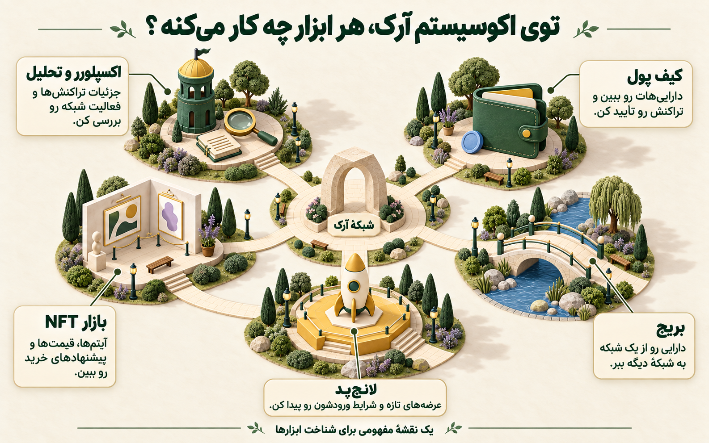
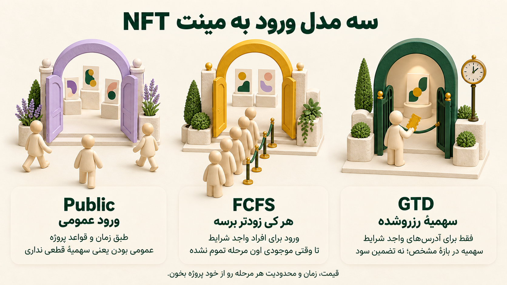

تایملاین رو باز میکنی؛ یکی دنبال سهمیهٔ مینت رابینهوده، یکی اسم چند پروژهٔ آرک رو ردیف کرده، یکی هم میگه «این یکی رو از دست نده». چند دقیقه بعد ده تا تب باز داری و هنوز معلوم نیست قدم اول چیه.
بیا این بار یک کار مشخص بکنیم: تا آخر این راهنما، یک فهرست کوتاه از چیزهایی که میخوای دنبال کنی میسازی، میفهمی برای ورود به شبکه چه چیزهایی لازمه و برای سه روز اولت برنامه داری.
لازم نیست همهٔ اصطلاحات رو از قبل بلد باشی. هر کدوم سر راه لازم بشه، همونجا بازش میکنیم.
اول ببینیم آرک چیه و چرا الان سر زبونهاست
Arc یک بلاکچین لایهاوله که Circle برای کار با پول دیجیتال، پرداختها و برنامههای مالی ساخته. لایهاول یعنی خودِ شبکه است؛ برنامهها، بازارها و پروژهها روی اون ساخته میشن. Circle رو احتمالاً با USDC میشناسی؛ استیبلکوینی که برای دنبالکردن ارزش دلار طراحی شده.
طبق اعلام رسمی، میننت عمومی آرک قراره ۱۶ سپتامبر ۲۰۲۶ باز بشه. «میننت» هم یعنی محیط اصلی شبکه که دارایی و تراکنش واقعی داره. قبل از عمومیشدن، شبکه در مرحلهٔ میننت خصوصی بوده و گروهی از سازندهها روی اون کار میکردن. اعلام رسمی لانچ
برای کسی که از مینتها و پروژههای رابینهود خبر داره، این انتظار آشناست: یک شبکهٔ تازه، پروژههای تازه و رقابت برای جلب توجه. آرک هم حالا داره وارد همین گفتگوها میشه. بهجای اینکه دنبال همهچیز بدوی، بهتره از الان بدونی کدوم بخشش برای تو جالبه.
این راهنما در ۱۳ سپتامبر ۲۰۲۶، قبل از لانچ عمومی نوشته شده. کارهای قبل از لانچ رو الان میتونی انجام بدی؛ مراحل ورود پول و استفاده از برنامهها مربوط به وقتیان که مسیر رسمیشون روی میننت فعال شده باشه.
اول جای خودت رو توی این نقشه پیدا کن
فرض کن وارد یک محلهٔ تازه شدی. قبل از انتخاب مغازه، خوبه بدونی پل ورودی کجاست، بازار کجاست و تابلوهای راهنما رو از کجا باید بخونی. اکوسیستم یک شبکه هم تقریباً همین شکلیه.
روی یکی از شمارههای نقشه یا اسم ابزار بزن؛ ببین کِی به کارت میآد.

از کجای نقشه شروع کنیم؟
یک ابزار رو انتخاب کن تا با یک مثال ساده بشناسیش.
توضیح تصویر، بهصورت متن
- کیف پول: داراییهات رو ببین و تراکنش رو تأیید کن.
- بریج: دارایی رو از یک شبکه به شبکهٔ دیگه ببر.
- لانچپد: عرضههای تازه و شرایط ورودشون رو پیدا کن.
- بازار NFT: آیتمها، قیمتها و پیشنهادهای خرید رو ببین.
- اکسپلورر و تحلیل: جزئیات تراکنشها و فعالیت شبکه رو بررسی کن.
یک نقشهٔ مفهومی برای شناخت ابزارها.
| چیزی که میبینی | به زبان ساده | چه موقع به کارت میآد؟ |
|---|---|---|
| کیف پول | ابزار دیدن دارایی و تأیید کارهایی که با حسابت انجام میدی | برای ورود به برنامهها و امضای تراکنش |
| بریج | راه انتقال دارایی بین دو شبکه | وقتی USDC روی یک شبکهٔ دیگه داری |
| لانچپد | بستری که پروژهها توکن یا کالکشن خودشون رو ازش عرضه میکنن | برای دیدن عرضههای تازه و شرایط ورود |
| بازار NFT یا صرافی غیرمتمرکز | جایی برای خریدوفروش NFT یا توکن | وقتی میخوای قیمت، پیشنهادها و معاملهها رو ببینی |
| ابزار تحلیل و اکسپلورر | صفحهٔ جزئیات فعالیت شبکه، قرارداد و تراکنشها | وقتی میخوای خودت ببینی چه اتفاقی افتاده |
قرار نیست همین امروز برای هر ردیف یک برنامه نصب کنی. اگر دنبال NFT هستی، فعلاً کالکشنها، بازارشون و شرایط مینت مهمترن. اگر دنبال توکنها هستی، نقدینگی و ابزار دیدن معاملات جلوتر میآد. اگر هم محتوا میسازی، شاید نقشهٔ پروژهها و خبرهای لانچ خودش موضوع اصلی کارت باشه.
برای شروع، فهرست رسمی اکوسیستم Arc رو باز کن. اسمها رو با کاربردشون ببین؛ وجود یک اسم در فهرست اکوسیستم هم بهتنهایی به معنی آمادهبودن همهٔ قابلیتهاش در روز اول نیست.
امروز این چهار چیز رو آماده کن
۱. یک هدف کوتاه بنویس. مثلاً «میخوام سه کالکشن NFT رو دنبال کنم» یا «میخوام ببینم کدوم لانچپد واقعاً استفاده میشه». این جمله جلوی تبدیلشدن واچلیستت به صد تا اسم بیربط رو میگیره.
۲. کیف پولت رو بشناس. اگر قبلاً با یک کیف پول سازگار با اتریوم کار کردی، بخش زیادی از تجربه برات آشناست. آرک با ابزارهای EVM سازگاره؛ یعنی از همون خانوادهٔ ابزارهایی استفاده میکنه که در شبکههای اتریومی میبینی. برای اتصال، مشخصات شبکه رو از مستندات رسمی بگیر. راهنمای اتصال
در زمان نگارش، صفحهٔ اتصال بالا مشخصات Arc Testnet رو نشون میده. تستنت محیط تمرینه و دارایی آزمایشیش پول واقعی نیست. برای استفادهٔ واقعی، باید مشخصات منتشرشدهٔ میننت رو بگیری؛ صرفاً اسم شبکه رو از Testnet به Mainnet تغییر نده.
اگر کیف پول اصلیت دارایی مهم داره، یک کیف پول جدا برای تجربههای تازه انتخاب معقولیه. عبارت بازیابی رو نگه دار و برای گرفتن سهمیه، مینت یا کمک پشتیبانی در هیچ سایتی واردش نکن. خود کیف پول ابزار دسترسی به حسابت روی شبکه است. راهنمای کیف پول اتریوم
۳. لینکهای اصلی رو بوکمارک کن. صفحهٔ آرک، اطلاعیهٔ لانچ، مستندات و صفحهٔ رسمی پروژههایی که انتخاب کردی. روز شلوغ لانچ، پیداکردن دوبارهٔ لینک از بین ریپلایها کار اضافه است.
۴. سقف تجربهات رو مشخص کن. چه مقدار زمان و، اگر تصمیم به استفادهٔ پولی گرفتی، چه مقدار پول برای این تجربه کنار میذاری؟ پولی که صرف مینت یا خرید میکنی میتونه از دست بره؛ عددی انتخاب کن که این اتفاق برنامهٔ زندگیت رو به هم نریزه. برای ساختن واچلیست و دنبالکردن لانچ اصلاً لازم نیست خریدی انجام بدی.
برای ورود پول، فقط این مسیر رو بفهم
نکتهٔ کاربردی آرک اینه که کارمزد خود شبکه با USDC پرداخت میشه. همون موجودی باید هزینهٔ تراکنشهای بعدیت رو هم پوشش بده؛ لازم نیست برای گس آرک یک توکن جدا بخری. کارمزدهای Arc
حالا فرض کن USDC تو روی Base یا اتریومه. برای استفاده روی آرک، باید از مسیری بری که شبکهٔ مبدأ و مقصد رو پشتیبانی کنه. این همون جاییه که «بریج» وارد داستان میشه.
یکی از زیرساختهای Circle برای این کار CCTPه. خیلی ساده: USDC در شبکهٔ مبدأ سوزونده میشه، انتقال تأیید میشه و USDC بومی در مقصد ساخته میشه. رابطی که استفاده میکنی ممکنه این مراحل رو پشت یک دکمه جمع کنه. لازم نیست خودت کد بنویسی. توضیح CCTP در مستندات Arc
وقتی مسیر میننت فعال شد، ترتیب کارت این باشه:
 شبکهٔ مبدأUSDC اینجاست
شبکهٔ مبدأUSDC اینجاست- از لینک رسمی وارد رابط انتقال شو و شبکهٔ مبدأ، Arc Mainnet و آدرس مقصد رو بخون.
- مقدار دریافتی و همهٔ هزینههایی که نشون میده رو ببین. شبکهٔ مبدأ ممکنه برای کارمزد به ETH یا دارایی بومی خودش نیاز داشته باشه.
- اگر تصمیم به انتقال گرفتی، اول مبلغ کمی رو امتحان کن و شناسهٔ تراکنش رو نگه دار.
- دریافت روی مقصد رو بررسی کن و مقداری USDC برای تراکنشهای بعدی باقی بذار.
اگر انتقال در حال پردازشه، وضعیت همون انتقال رو دنبال کن. صرفاً به خاطر چند دقیقه تأخیر، یک انتقال تازه نساز.
یک مثال ساده برای عجلهنکردن: اگر برای گرفتن ۱۰۰ واحد USDC، معادل ۲۰۰ دلار پرداخت کنی، از همون اول نصف قدرت خریدت رو از دست دادی. حتی دوبرابرشدن ارزش خرید بعدی فقط میتونه اصل پولت رو، قبل از هزینهها، برگردونه. زودرسیدن هم قیمت داره؛ اون قیمت رو هم حساب کن.
از اینهمه اسم، سه مورد برای خودت انتخاب کن
واچلیست یعنی فهرست چیزهایی که میخوای زیر نظر بگیری. قرار نیست هر اسمی که توش نوشتی رو بخری. کنار هر اسم باید یک دلیل و یک سؤال داشته باشی.
اول دستهای رو انتخاب کن که به کارت میآد: لانچپد برای دنبالکردن عرضهها، رابط بریج برای انتقال بین شبکهها، یا ابزار معامله برای خرید و فروش. برای پیداکردن گزینهها از فهرست رسمی اکوسیستم آرک شروع کن؛ بعد دامنهٔ رسمی خود پروژه و وضعیت فعلی پشتیبانیش از آرک رو بررسی کن.
مثلاً بهجای «فلان لانچپد حتماً میگیره»، بنویس: «میخوام ببینم بعد از بازشدن شبکه چند پروژه ازش استفاده میکنن و آیا معاملهها ادامه پیدا میکنن». این سؤال فردا قابلبررسیه.
از قالب زیر شروع کن و برای سه مورد جوابش بده. این فهرست، قیمت یا وضعیت زندهٔ پروژهها رو خودکار نمیگیره.
یک قالب ساده برای نوتهات
متن رو انتخاب و کپی کن، توی نوتهات بذار و برای سه مورد پرش کن. اگر فایل آماده میخوای، لینک زیر قالب کامل رو میده.
اسم پروژه یا ابزار: … دسته: … لینک رسمی: … چرا دنبالشم؟ … دفعهٔ بعد چی رو چک کنم؟ …گرفتن قالب متنی برای سه مورد ↓
برای هر مورد یکی از این وضعیتها رو انتخاب کن: «زیر نظر»، «منتظر جزئیات»، «آمادهٔ بررسی» یا «فعلاً کنار گذاشتم». اگر فردا نظرت عوض شد، تغییرش بده. هدف اینه که هر بار از صفر شروع نکنی.
اگر از NFTهای رابینهود میآی، این بخش آشناست
در یک مینت NFT، معمولاً با قیمت عرضه، تعداد کل آیتمها، زمان شروع و شرایط دسترسی روبهرو میشی. همین چهار مورد رو قبل از هیجان عکسها پیدا کن. مینت یعنی ایجاد اولیهٔ NFT روی شبکه؛ خرید از کسی که قبلاً مینت کرده، معاملهٔ بعدیه.

توضیح تصویر، بهصورت متن
GTD — سهمیهٔ رزروشده: فقط برای آدرسهای واجد شرایط. سهمیه در بازهٔ مشخص؛ نه تضمین سود.
FCFS — هر کی زودتر برسه: ورود برای افراد واجد شرایط، تا وقتی موجودی اون مرحله تموم نشده.
Public — ورود عمومی: طبق زمان و قواعد پروژه. عمومی بودن یعنی سهمیهٔ قطعی نداری.
قیمت، زمان و محدودیت هر مرحله رو از خود پروژه بخون. همهٔ پروژهها لزوماً هر سه مرحله رو ندارن.
از کدوم در وارد میشی؟
موقعیت رو بخون و یکی از سه در رو انتخاب کن. جواب هر سؤال رو همونجا با هم باز میکنیم.
سؤال ۱ از ۳
سه در، سه جور شرط ورود
قبل از مینت، این سه چیز رو پیدا کن: چه کسی اجازهٔ ورود داره، تا چه زمانی، و با چه سهمیهای.
- GTD: سهمیهٔ مشخص در بازهٔ اعلامشده.
- FCFS: افراد واجد شرایط، تا وقتی موجودی باقی مونده.
- Public: ورود عمومی طبق قواعد پروژه.
این تمرین فقط فرق مرحلهها رو یاد میده. شرایط هر پروژه رو جدا بخون.
وقتی پروژهای چند مرحله برای مینت میذاره، ممکنه این اسمها رو ببینی:
| اصطلاح | یعنی چی؟ | چه چیزی رو باید بخونی؟ |
|---|---|---|
| Allowlist یا وایتلیست | فهرست آدرسهایی که برای یک مرحله اجازهٔ ورود دارن | آدرس تو ثبت شده؟ برای کدوم مرحله؟ |
| GTD | سهمیهای که پروژه برای مرحله و بازهٔ مشخص تضمین کرده | چند آیتم، چه قیمت و تا چه ساعتی؟ این تضمین مربوط به سهمیه است، نه سود |
| FCFS | هر کس زودتر اقدام کنه، تا وقتی موجودی اون مرحله باقی مونده | واجد شرایط بودن به معنی رسیدن قطعی NFT نیست |
| Public | مرحلهای با دسترسی عمومی طبق قواعد پروژه | موجودی، محدودیت هر کیف پول و زمان شروع |
کامیونیتیها و کالَبمنیجرها ممکنه واسطهٔ گرفتن سهمیه از پروژه باشن. کالَبمنیجر همون کسیه که همکاری و سهمیهها رو بین پروژه و گروهها هماهنگ میکنه. بعد از برندهشدن در یک قرعهکشی، هنوز باید ببینی آدرست برای کدوم مرحله ثبت شده و شرایط همون مرحله چیه.
فرض کن یک کالکشن خیالی ۱۰۰۰ آیتم داره و ۲۰ دلار قیمت مینت اعلام کرده. اولین سؤال فقط «ارزونه؟» نیست. زمانبندی، محدودیت عرضه و شرایط مینت رو بخون؛ بعد ببین اصلاً چرا دوست داری مالک یک آیتمش باشی.
بعد از مینت هم کف قیمت فقط کمترین قیمتِ آگهی فروشه. برای فهمیدن امکان فروش، پیشنهادهای خرید و معاملههای انجامشده رو کنار اون ببین. ممکنه پایینترین فروشنده ۳۰ دلار بخواد، ولی خریداری با همون قیمت وجود نداشته باشه.
همهٔ پروژههای آرک هم NFT نیستن. میمکوین، ابزار معامله و لانچپد هرکدوم سازوکار خودشون رو دارن؛ قواعد سهمیهٔ NFT رو خودکار به بقیه تعمیم نده.
هزینه رو از روی نتیجهٔ واقعی مقایسه کن
وقتی دو ابزار رو مقایسه میکنی، فقط درصد بزرگ بالای صفحه رو نبین. برای یک مبلغ یکسان، بپرس: «آخرش چقدر دارایی به من میرسه و اگر بخوام خارج بشم، چه هزینهای دارم؟»
| بخش هزینه | نمونهٔ چیزی که میبینی |
|---|---|
| انتقال بین شبکهها | هزینهٔ مسیر بریج و تراکنش مبدأ یا مقصد |
| انجام معامله | کارمزد برنامه، بازار یا استخر معامله |
| تفاوت قیمت اجرا | قیمتی که موقع انجام معامله با چیزی که دیدی فرق میکنه |
| خروج | فروش، انتقال یا برگشت به شبکهٔ دیگه |
مثال فرضی: ۱۰۰ دلار برای ورود کنار گذاشتی و بعد از انتقال، ۹۸ دلار در مقصد داری. این یعنی هزینهٔ رسیدن تا اینجا ۲ دلاره؛ هزینهٔ خرید و فروش احتمالی هنوز بهش اضافه نشده.
تعرفهٔ برنامهها هم میتونه به نوع معامله وابسته باشه. مثلاً Fomo در شرایط خودش نوشته هزینهٔ معامله با توجه به مبلغ، توکن و مسیر اجرا مشخص میشه. برای همین عددی که قبل از تأیید میبینی مهمتر از یک درصد نقلشده در تایملاینه. توضیح رسمی هزینهها
اگر مبلغ نهایی، توکن دریافتی یا دسترسیای که امضا میکنی برات روشن نیست، همونجا مکث کن. وصلکردن کیف پول با تأیید اجازهٔ خرجکردن دارایی یک کار نیست.
سه روز اول رو اینطوری دنبال کن
لانچ که شروع شد، همهچیز با هم توی فید میآد: پروژههای تازه، خبر همکاری، چارت و اسکرینشات سود. یک برنامهٔ کوتاه کمک میکنه هر بار بدونی دنبال جواب کدوم سؤال اومدی.
اول ببین چه چیزی واقعاً کار میکنه
اطلاعیهٔ لانچ رو بخون. کیف پول، مسیر انتقال و ابزارهای فهرستت رو بررسی کن و کنار هرکدوم بنویس «فعال شده» یا «هنوز منتظرم». اگر خواستی استفاده کنی، یک کار کوچک و قابلپیگیری انتخاب کن.
- مسیر انتقال میننت فعال شده؟
- پروژهٔ انتخابی تو برنامهٔ مشخصی اعلام کرده؟
- هزینه و نتیجهٔ کار قبل از تأیید روشنه؟
چیزی که آخر روز داری: فهرستی از مسیرها و پروژههایی که واقعاً آمادهٔ بررسیان.
ببین بعد از شلوغی اول چه چیزی مونده
به همون پروژهها برگرد. آیا کاربرها هنوز فعالن؟ معامله ادامه داره؟ برای NFTها پیشنهاد خرید واقعی هست؟ آمار رو در یک بازهٔ یکسان مقایسه کن.
- چند عرضه یا بهروزرسانی تازه داشته؟
- حجم معامله و نقدینگی نسبت به دیروز چه تغییری کرده؟
- ابزار یا پروژه هنوز قابلاستفاده است؟
چیزی که آخر روز داری: یک یادداشت کوتاه از فرق امروز با دیروز، همراه لینک.
فقط چیزهایی رو نگه دار که دلیل داری دنبال کنی
کنار هر اسم یک جمله بنویس: چرا هنوز توی فهرست منه؟ اگر جواب روشنی نداری، بذارش کنار. اگر چیزی یاد گرفتی، سؤال بعدی رو دقیقتر کن.
- کدوم ادعا به یک قابلیت واقعی تبدیل شده؟
- چه اطلاعاتی هنوز کم داری؟
- دفعهٔ بعد، کدوم تغییر ارزش برگشتن داره؟
چیزی که آخر روز داری: واچلیستی کوتاهتر، با دلیل روشن و قدم بعدی مشخص.
برای مقایسهٔ دو لانچپد، بازهٔ زمانی رو یکسان بگیر. حجم ۲۴ ساعتهٔ یکی رو با کل عمر اون یکی مقایسه نکن. اگر عددی پیدا نکردی، خالی بذارش؛ تعداد فالوئر جای نقدینگی رو نمیگیره.
حجم معامله میگه چقدر خریدوفروش انجام شده. نقدینگی کمک میکنه بفهمی معامله با چه مقدار تغییر قیمت قابلانجامه. تعداد معاملهگرها هم تصویر متفاوتی از شلوغی بازار میده. هیچکدوم بهتنهایی حکم نهایی نیستن؛ کنار هم معنی پیدا میکنن.
سه روز بعد لازم نیست به یک «برندهٔ قطعی» رسیده باشی. همین که بتونی بگی کدوم پروژه فعال شده، کدوم هنوز وعده است و کدوم دیگه به کارت نمیآد، فهرستت مفیدتر شده.
بذار گراک بات بخش تکراری رو انجام بده
اگر قرار باشه هر روز ده تا صفحه رو از اول بخونی، این هم به یک کار خستهکننده تبدیل میشه. اینجا همون خبرخوانی که در راهنمای گراک بات ساختیم به کارت میآد.
تو انتخاب میکنی چه چیزهایی مهمن؛ بات میتونه تغییرها رو جمع کنه و با لینک برگردونه. برای شروع، همین درخواست رو با اسمها و لینکهای فهرست خودت شخصیسازی کن:
میخوام لانچ Arc و این سه پروژه رو دنبال کنم:
۱. [اسم و لینک رسمی پروژهٔ اول]
۲. [اسم و لینک رسمی پروژهٔ دوم]
۳. [اسم و لینک رسمی پروژهٔ سوم]
فعلاً یک بار، اطلاعیههای رسمی و پستهای ۲۴ ساعت اخیر همین منابع رو بررسی کن. حداکثر ۵ تغییر مهم بیار.
برای هر مورد ساده بنویس: چی عوض شده؟ برای پیگیری من چه معنیای داره؟ لینک اصلی و زمان انتشارش کجاست؟
مشخص کن دربارهٔ تستنت حرف میزنن یا میننت، و قابلیت واقعاً فعال شده یا فقط اعلام شده. اگر به منبع دسترسی نداری یا ادعایی رو تأیید نکردی، کوتاه بگو.
اگر اطلاعات عمومی قابلمقایسه دربارهٔ حجم معامله، نقدینگی یا تعداد کاربران هست، همراه منبع و بازهٔ زمانی اضافه کن. عددی که پیدا نکردی رو حدس نزن.
فقط تحقیق کن و نتیجه رو در گفتگو بده؛ کیف پول وصل نکن، تراکنش انجام نده و چیزی منتشر نکن.اول یک خروجی بگیر و ببین به دردت میخوره یا نه. اگر خبرهای تکراری آورد، بگو فقط تغییرهای تازه رو نگه داره. بعد میتونی طبق راهنمای گراک، روزی یکبار یا صبح و عصر براش زمان بذاری. هزینهٔ بات و ابزار جستوجو به حساب و تنظیمات خودت مربوطه؛ فرمها و چکلیست همین مقاله API مصرف نمیکنن.
قبل از بستن این صفحه، این چند کار رو جمع کن
برای امروز همین کافیه: هدفت روشن باشه، چند لینک درست داشته باشی و بدونی دفعهٔ بعد چه چیزی رو میخوای بررسی کنی. میتونی موارد انجامشده رو همینجا تیک بزنی.
اگر آخر این مسیر فقط یک واچلیست بهتر ساخته باشی، باز هم از جایی که ده تا اسم پراکنده توی ذهنت بود جلوتر اومدی. روز لانچ، بهجای پرسیدن «الان چی بخرم؟»، میدونی از کجا شروع کنی و دنبال چه شواهدی بگردی.
منابع و دربارهٔ این راهنما
این راهنما در ۱۳ سپتامبر ۲۰۲۶ آماده شده. بخش قبل از لانچ برای همین بازه نوشته شده؛ بعد از ۱۶ سپتامبر، وضعیت ابزارها و مسیرهای میننت رو از لینکهای رسمی دوباره ببین.
- Arc؛ تاریخ رسمی لانچ عمومی
- فهرست اکوسیستم Arc
- راهنمای اتصال و تمایز تستنت
- کارمزدها و USDC در Arc
- انتقال USDC با CCTP
- شبکههای پشتیبانیشدهٔ CCTP
- کیف پول و مدیریت کلیدها در ethereum.org
- شرایط و هزینههای Fomo
- مقالهٔ Horsemen دربارهٔ شروع با NFT
- نقشهٔ قبل از لانچ Arc از StarPlatinum
دو مقالهٔ آخر، نقطهٔ شروع گفتگو و پیداکردن موضوعها بودن. فهرستهای شخصی نویسندهها به معنی پیشنهاد خرید این راهنما نیستن. مثالهای عددی، آموزشی و فرضیان. متن و تصویرسازی با کمک هوش مصنوعی آماده شدن؛ کاور نمایش مفهومی ورود به یک اکوسیستم تازه است.
لوگوهای Arc، Circle و USDC از کیت رسمی برند Circle گرفته شدن.
نقشهٔ ابزارها و تصویر مراحل مینت با هوش مصنوعی تصویرسازی شدن؛ نوشتههای فارسیشون هم در نسخهٔ متنی زیر هر تصویر هست.